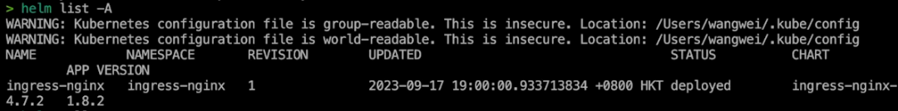
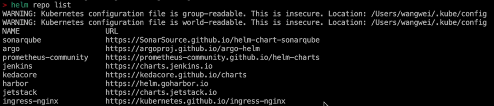
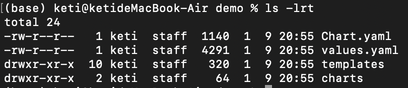

Helm
应用定义：Helm 入门和实战
使用 Helm 定义应用
- 管理 K8s 对象
- 将多个微服务的工作负载、配置对象等封装为一个应用
- 屏蔽终端用户使用的复杂度
- 参数化、模板化，支持多环境
从第三方 Helm Chart 开始
-
GitHub
- https://github.com/bitnami/charts
-
Artifact Hub
- https://artifacthub.io
Helm 核心概念
Chart
K8s 应用安装包，包含应用的 K8s 对象用于创建实例
Release
使用默认或特定参数安装的 Helm 实例（运行中的实例）。
我们知道 Helm Chart 实际上是一个应用安装包，只有在安装（实例化）它时才会生效。它可以在同一个集群中甚至是同一个命名空间下安装多次，所以我们就需要为每次安装都起一个唯一的名字，这就是 Helm Release Name。
Repository
用于存储和分发的 Helm Chart 仓库（Git、OCI）
Helm 安装
curl https://raw.githubusercontent.com/helm/helm/main/scripts/get-helm-3 | bash
https://helm.sh/docs/intro/install/
插一句：helm list 信息存在哪？
会有一个 secret——sh.helm.release.xxxxxxxx
Helm 常用命令
- install：安装 Helm Chart， -f 指定 yaml 文件，--set 指定要覆盖的 key 和 value。
- get, status, list：获取 Helm Release 的信息，例如安装状态、日志、安装参数等
- uninstall：卸载 Helm Release
- repo add, repo list, repo remove, repo index： Repository 相关命令
- search：在 Repository 中查找 Helm Chart
- create, package：创建和打包 Helm Chart
- pull：拉取 helm chart
- rollback：回滚到指定版本


Demo: 从零创建 Helm Chart
helm create demo
-
核心目录和文件
-
templates 目录
- 用来存放模板文件，你可以把它视作 Kubernetes Manifest，但它和 Manifest 最大的区别是，模板文件可以包含变量，变量的值则来自于 values.yaml 文件定义的内容。
-
Chart.yaml
- Helm Chart 的描述文件，例如名称、描述和版本等。
-
values.yaml
- 安装参数定义文件，它不是必需的。在 Helm Chart 被打包成 tgz 包时，如果 templates 目录下的 Kubernetes Manifest 包含变量，那么你需要通过它来提供默认的安装参数。作为最终用户，当安装某一个 Helm Chart 的时候，也可以提供额外的 YAML 文件来覆盖默认值。比如在上面的期望效果图中，我们为同一个 Helm Chart 提供不同的安装参数，就可以得到具有配置差异的多套环境。
-

Chart.yaml
apiVersion: v2 # API 版本，默认v2
name: demo # Helm Chart 名称
description: A Helm chart for Kubernetes # 描述
type: application # application 或 library，对于应用选择前者
version: 0.1.0 # Helm Chart 版本号
appVersion: "1.16.0" # 应用版本号
dependencies: # 依赖的其他 chart
其中，apiVersion 字段设置为 v2，代表使用 Helm 3 来安装应用。
name 表示 Helm Chart 的名称，当使用 helm install 命令安装 Helm Chart 时，指定的名称也就是这里配置的名称。
description 表示 Helm Chart 的描述信息，你可以根据需要填写。
type 表示类型，这里我们将其固定为 application，代表 Kubernetes 应用。
version 表示我们打包的 Helm Chart 的版本，当使用 helm install 时，可以指定这里定义的版本号。Helm Chart 的版本就是通过这个字段来管理的，当我们发布新的 Chart 时，需要更新这里的版本号。
appVersion 和 Helm Chart 无关，它用于定义应用的版本号，建立当前 Helm Chart 和应用版本的关系。
values.yaml
# 所有字段和值都可自定义，用来为模板提供值
replicaCount: 1
image:
repository: nginx
pullPolicy: IfNotPresent
# Overrides the image tag whose default is the chart appVersion.
tag: "v1.0"
imagePullSecrets: []
nameOverride: ""
fullnameOverride: ""
模板变量
# templates/deployment.yaml
apiVersion: apps/v1
kind: Deployment
spec:
template:
spec:
containers:
- name: {{ .Chart.Name }}
image: "{{ .Values.image.repository }}:{{ .Values.image.tag }}"
# 该模板变量替换为 values.yaml 配置的值
Ingress 处理：使用命名空间变量
- 使用安装命名空间变量作为域名 prefix
- 自动为每一个环境配置访问域名
- {{ $.Release.Namespace }}
Helm 高级核心技术
-
内置变量和函数
- https://helm.sh/docs/chart_template_guide/builtin_objects/
- https://helm.sh/docs/chart_template_guide/function_list
-
依赖
- https://helm.sh/docs/helm/helm_dependency
-
渲染和调试
- helm template . --debug
-
Sub Chart（子 Chart）
- https://helm.sh/docs/chart_template_guide/subcharts_and_globals
-
Helm Hooks
- https://helm.sh/docs/topics/charts_hooks/
- pre-install、post-install、pre-delete、post-delete、pre-upgrade、post-upgrade、pre-rollback、postrollback
内置变量
-
Release
- Release.Name
- Release.Namespace
- Release.IsUpgrade
- Release.IsInstall
- Release.Revision
- Release.Service
-
Values
- {{ .Values.Obj }}
-
Chart
- {{ .Chart.Name }}
-
Files
- Files.Get
- Files.Glob
- Files.AsSecrets
- Files.AsConfig
-
Capabilities
- Capabilities.APIVersions
- Capabilities.KubeVersion
-
Template
- Template.Name
- Template.BasePath
内置函数
- Date
- Encoding
- File Path
- Lists
- Math
- Network
- Regular Expressions
- String
- Type Conversion
- URL
- UUID
依赖（Dependencies）
# Chart.yaml
dependencies:
- name: nginx
version: "1.2.3"
repository: "https://example.com/charts"
- name: memcached
version: "1.2.3"
repository: "file://../dependency_chart/memcached"
子 Chart（Sub Chart）
-
Sub Chart 和 dependencies 依赖的关系
-
dependencies 是借助子 chart 来实现的
-
子 chart 约定放在 charts 目录，和 templates 目录同级
-
helm 会将依赖下载到 charts 目录
-
子 chart 也可以自己创建
-
父 chart 可以覆写子 chart 的 values.yaml 值，但子 chart 不能覆写父 chart values.yaml 值
subchart:
key: values
-
values 有一个保留关键字：global，在 values.yaml 定义后，子和父 chart 都能访问
global:
salad: caesar
Hooks
- pre-install：渲染模板之后、创建任何资源之前执行 (helm install)
- post-install：所有资源部署到 Kubernetes 后执行 (helm install)
- pre-delete：在从 Kubernetes 中删除任何资源之前执行 (helm uninstall)
- post-delete：在删除所有资源后执行 (helm uninstall)
- pre-upgrade：在渲染模板后、更新资源前执行 (helm upgrade)
- post-upgrade：在升级所有资源后执行 (helm upgrade)
- pre-rollback：在渲染模板之后、回滚任何资源之前执行 (helm rollback)
- post-rollback：在修改所有资源后执行 (helm rollback)
- test：在执行 helm test 命令时执行
Demo：Hooks
apiVersion: batch/v1
kind: Job
metadata:
name: "{{ .Release.Name }}"
annotations:
# This is what defines this resource as a hook. Without this line, the
# job is considered part of the release.
"helm.sh/hook": post-install
"helm.sh/hook-weight": "-5"
"helm.sh/hook-delete-policy": hook-succeeded
Helm Cheat Sheet
# 安装 Helm Chart 或者执行升级，无需担心重复执行问题
$ helm upgrade --install <release name> --values <values file> <chart directory>
# 查看 Helm Chart values.yaml 配置信息
$ helm inspect values <CHART>
# 查看 Helm Repository Chart 列表
$ helm repo list
# 查看所有命名空间的 release
$ helm list --all-namespaces
# 升级应用前先更新依赖
$ helm upgrade <release> <chart> --dependency-update
# 回滚应用
$ helm rollback <release> <revision>